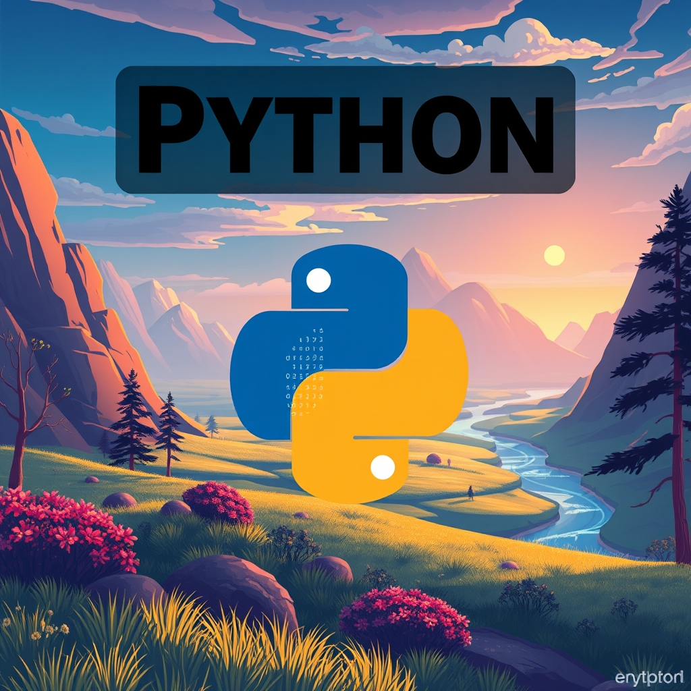

emystifying Python: Why It’s the Ultimate Language for Beginners and Pros Alike
Imagine sitting down at your computer, typing a line of code that reads exactly like a plain English sentence, and watching a complex digital task happen instantly. No cryptic symbols. No endless semicolons. Just pure, logical problem-solving.
Welcome to Python, one of the world's most popular and versatile programming languages.
Whether you want to automate boring spreadsheets, dive into artificial intelligence, build a dynamic web application, or simply learn how to code, Python is universally recognized as the best place to start. In this post, we’ll explore why Python dominates the tech world and how you can write your very first script today.
What Makes Python So Special?
Python was created by programmer Guido van Rossum and released in 1991. His core philosophy was simple: code readability matters. Python is designed to look clean and feel intuitive.
Here is what sets it apart from traditional programming languages:
• Readable Syntax: Python replaces complex punctuation (like the curly braces {} used in Java or C++) with clean, visual indentation.
• Batteries Included: Python comes pre-packaged with a massive standard library. You can handle file systems, manage databases, and process web data right out of the box.
• An Unmatched Community: Because millions of developers use Python, there is an open-source library for almost everything. If you want to build a website, you can use frameworks like Django or Flask. If you are analyzing data, you have tools like Pandas and NumPy.
The Ultimate Tech Chameleon
Python isn't just a learning tool—it powers some of the largest digital architectures on the planet. Its versatility makes it a staple across wildly different industries:
Industry / Field How Python is Used Popular Libraries / Frameworks
Data Science & AI Analyzing massive datasets, training machine learning models, and building neural networks. TensorFlow, PyTorch, Pandas
Web Development Building the hidden logic, databases, and servers that power modern websites. Django, Flask, FastAPI
Automation & Scripting Writing small programs to automate repetitive tasks like renaming files or scraping data from the web. Selenium, Beautiful Soup
FinTech Quantitative analysis, algorithmic trading, and risk management tracking. NumPy, SciPy
Fun Fact: Platforms you use every day—including Instagram, Spotify, and Netflix—rely heavily on Python to handle their data traffic and recommendation algorithms.